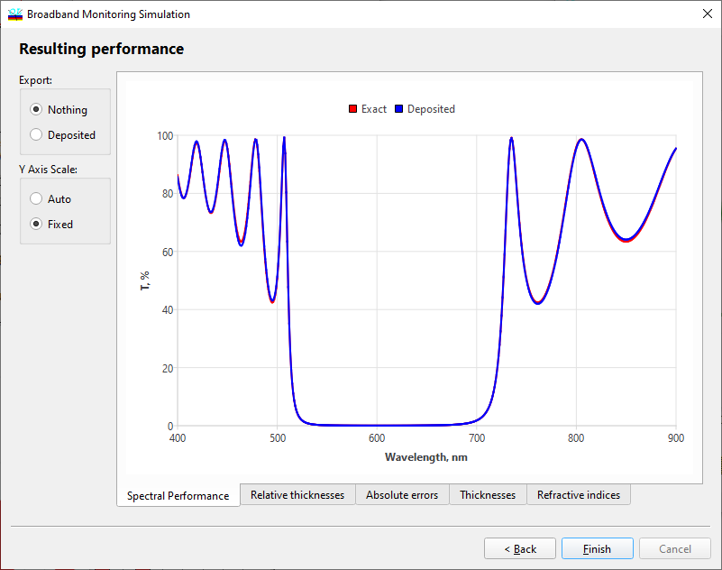
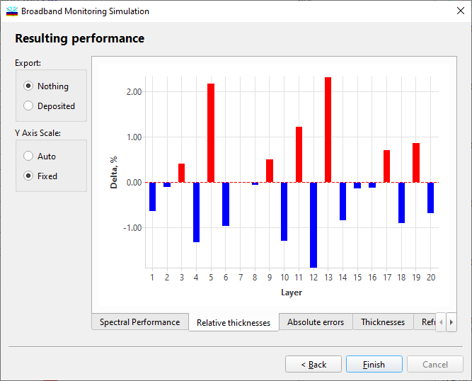
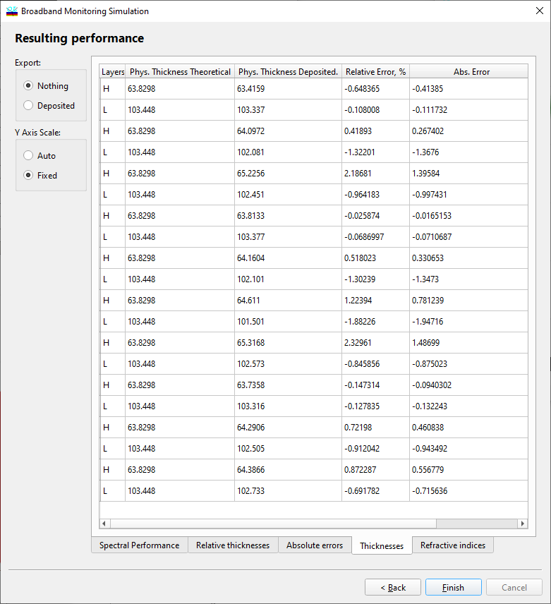
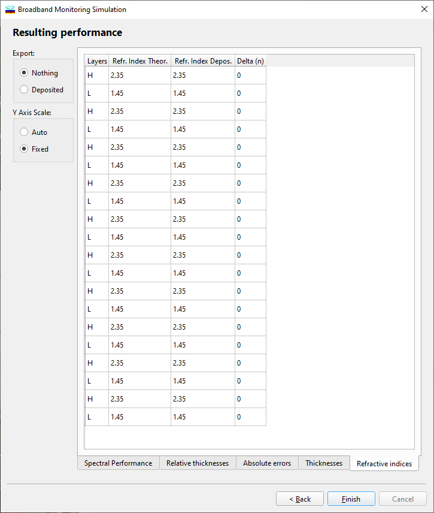

Broadband Monitoring Simulation - Resulting Performance
Broadband Monitoring Simulation - Resulting Performance
Navigation: OptiLayer Menu Commands > Analysis Menu > Broadband Monitoring Simulation >
Broadband Monitoring Simulation - Resulting Performance
` <broadmonsim_simul.html>`__ ` <broadbandmonitoringsimulatio.html>`__ ` <monochromatic_monitoring.html>`__

Results of the computational manufacturing experiment are presented at the sixth step of the dialog. The Spectral Performance tab allows the user to compare the spectral performance of the manufactured coating (red curve) with the theoretical design spectral performance (black curve). The Y Axis Scale radio button allows for selecting the type of scaling for the preview screen.
The “Adjust band…” button allows for opening the Options dialog and adjusting the X- and Y-axis scales.

Rel.Th. tab allows representing obtained relative thickness errors in the form of a bar chart.
Abs.Th. tab is quite similar but represents obtained thickness errors as absolute values.
The Thicknesses tab allows previewing relative errors in layer thicknesses of the manufactured coating.

The Thicknesses tab allows the user to examine results of the computational manufacturing experiment in numerical form. The Ph.Th.Theor. column presents the physical thicknesses of layers of theoretical design. The Ph.Th.Dep. column presents the physical thicknesses of layers of the manufactured coating. The Rel.Err.,% column presents relative errors in layer thicknesses of the manufactured coating. The Abs.Err. column presents absolute errors in layer thicknesses of the manufactured coating.

The Refr. Indices tab displays information concerning variations of refractive indices and inhomogeneities during simulated deposition.
The Export field on the left part of the screen can be used for exporting the actually deposited design to the RAM. This design is exported after pressing the Finish button if the Deposited radio button is checked. The exported design can then be processed using other OptiLayer options.
See also: